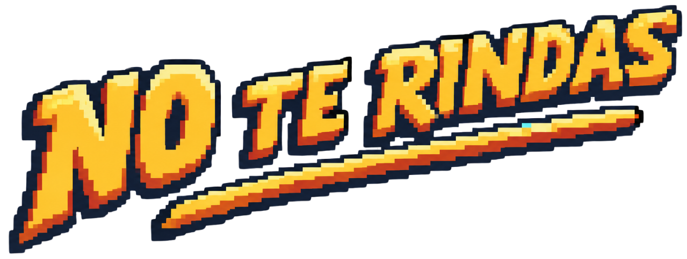

Elegí tu personaje
Tocá o barra espaciadora para saltar · ¡ojo con el tero en el cielo!
★ Ranking global · Top 5 ★
Tu récord actual
00000

Tocá o barra espaciadora para saltar · ¡ojo con el tero en el cielo!